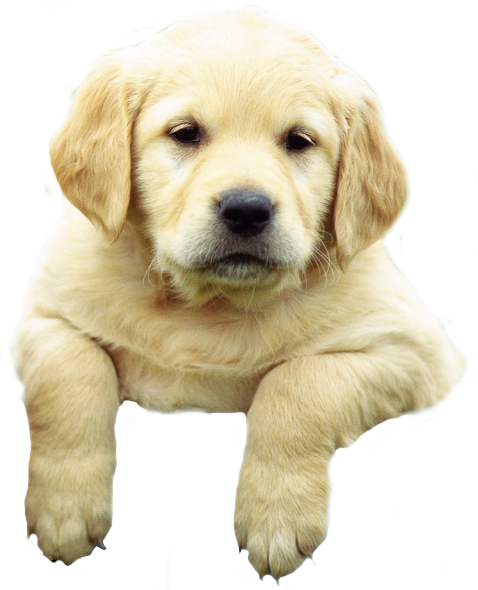

Pawesome Pups
Corgi
Beagle
Labrador Retriever
Golden Retriever
Poodle
Bulldog
Husky
Pug
German Shepherd
Pomeranian
Welsh Corgi
The Pembroke Welsh Corgi is a cattle herding dog breed
which originated in Pembrokeshire, Wales. It is one of
two breeds known as a Welsh Corgi. These dogs were used
to work cattle, and because of their size, could nip at the
livestock's heels while avoiding being kicked. This trait became
particularly valuable to working Welshcrofters (farmers) when
the British Crown decreed that they could own and work only
a few acres that surrounded their farms.
Click here for more information on the Corgi
Beagle

The history of the Beagle begins with the dog's ancestors
who originated in Ancient Greece. Dogs of similar size and
purpose (hunting) to the modern Beagle can be traced back
to the 5th century in Ancient Greece.
Click here for more information on the Beagle
Labrador Retriever

The Labrador Retriever, also called the Labrador, is a type of
retriever-gun dog. The Labrador is one of the most popular
breeds of dog in the United Kingdom and the United States.
Click here for more information on the Labrador Retriever
Golden Retriever

The Golden Retriever is a large-sized breed of dog bred
as gun dogs to retrieve shot waterfowl such as ducks
and upland game birds during hunting and shooting
parties, and was named 'retriever' because of its
ability to retrieve shot game undamaged.
Click here for more information on the Golden Retriever
Poodle
Poodles are native to Germany, not France as often thought.
They worked in the swamps as water dogs trained to retrieve fallen
birds for hunters. Otherwise the breed's origins are shrouded
in mystery.
Click here for more information on the Poodle
Bulldog

According to an Encyclopedia Britannica article, the bulldog breed
developed in the early 13th century to fight bulls. The English Bulldog
descended from ancient mastiffs that originated in Asia and were
brought to Europe. Mastiffs were bred for ferocity in fighting,
holding, or bringing down aggressive prey.
Click here for more information on the Bulldog
Husky

The Siberian Husky, Samoyed, and Alaskan Malamute
are all breeds directly descended from the original sled
dog. It is thought that the term "husky" is a corruption of
the nickname "Esky" once applied to the Eskimo
and subsequently to their dogs.
Click here for more information on the Husky
Pug
They were prized by the Emperors of China and lived
in luxurious accommodations, sometimes even being guarded
by soldiers. Pugs are one of three types of short-nosed dogs
that are known to have been bred by the Chinese: the Lion dog,
the Pekingese, and the Lo-sze, which was the ancient Pug.
Click here for more information on the Pug
German Shepherd
German Shepherds originated in Germany. It is known as GSD, formerly known
as an Alsatian in Britain. As part of the Herding Group, German Shepherds
are working dogs developed originally for herding sheep. Since that
time, however, because of their strength, intelligence, trainability,
and obedience, German Shepherds around the world are often
the preferred breed for many types of work, including disability
assistance, search-and-rescue, police and military roles, and even acting.
Click here for more information on the German Shepherd
Pomeranian

Pomeranians originated from Poland and Germany. The Pomeranian
was originally bred as a large sled dog in the 16th century,
but was reduced in size through breeding sometime in the
19th century. Perhaps this is why the breed often has a personality
that resembles one of a large dog. A member of the toy
group, the Pomeranian remains a popular companion dog today.
Click here for more information on the Pomeranian
Back to Top